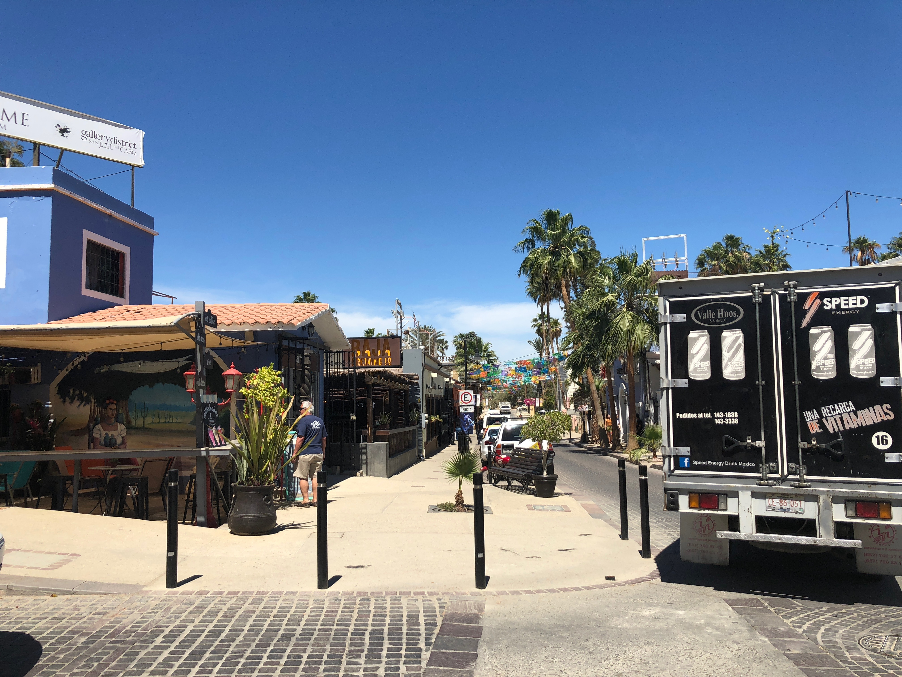
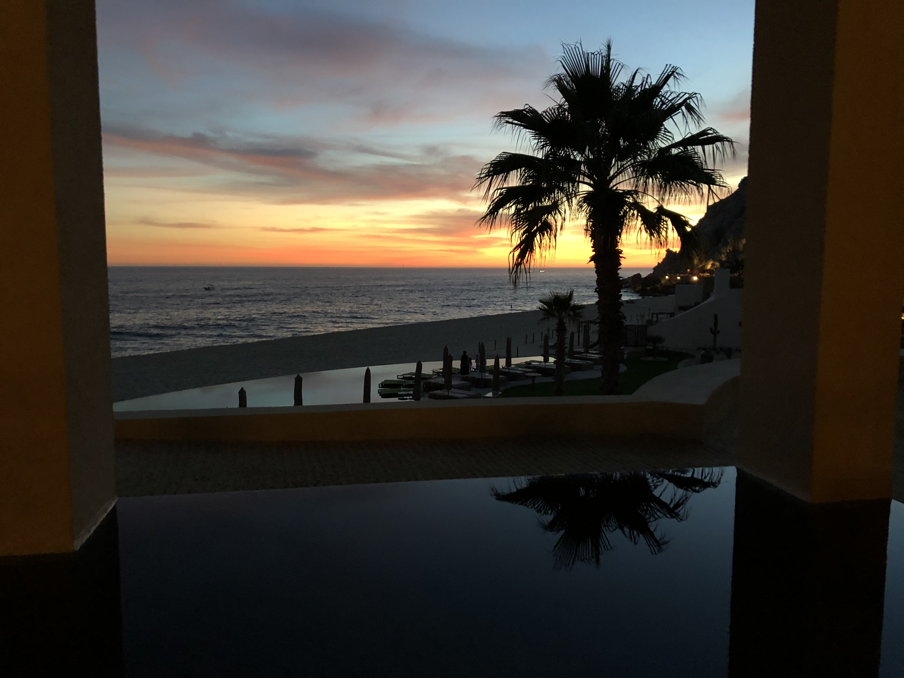
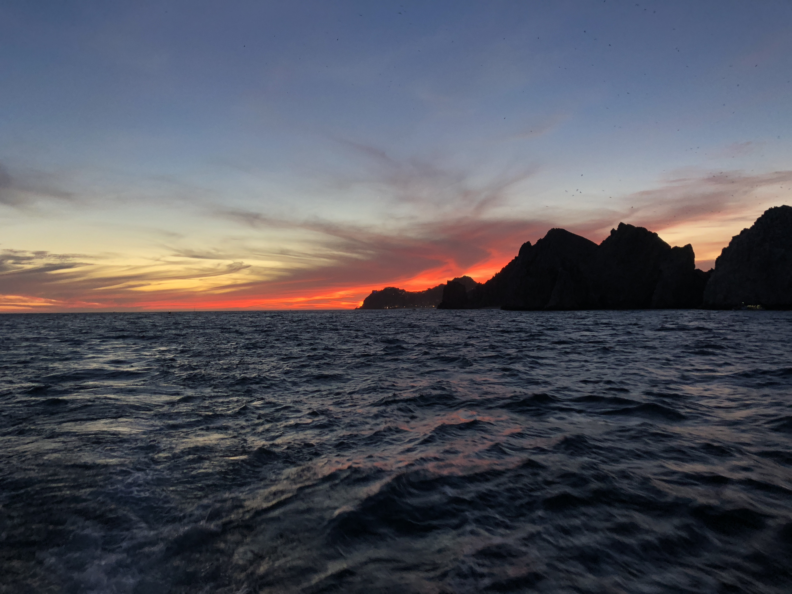
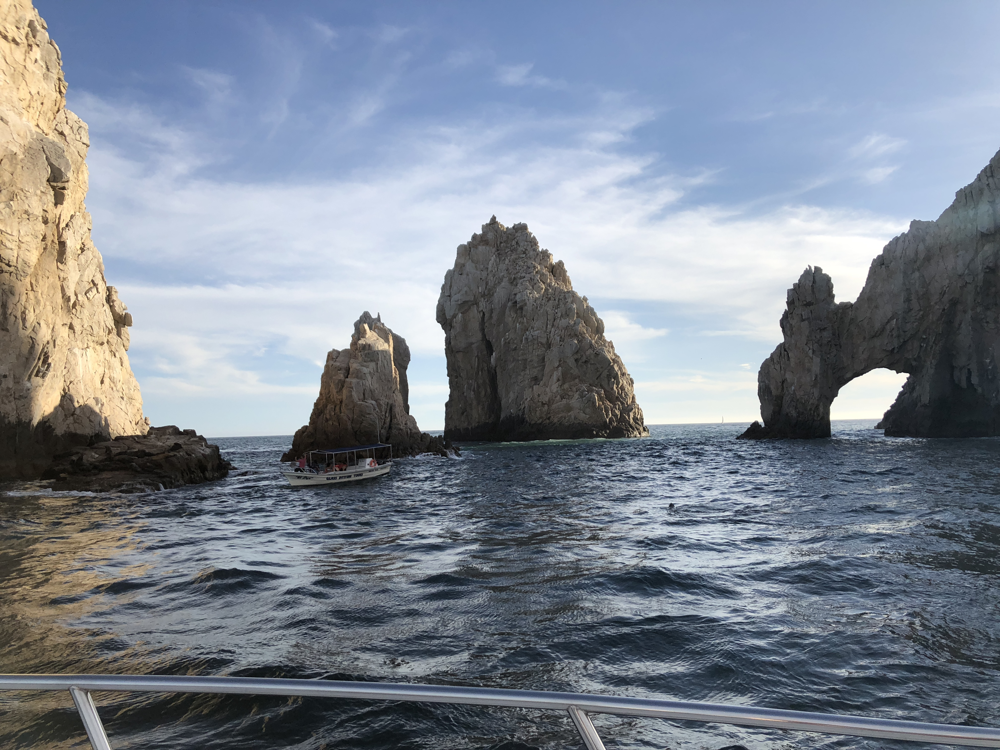

Los Cabos, Mexico
Los Cabos, Mexico is located at the tip of Mexicos state Baja California Sur.
Culture
The culture of Cabo is very typical mexican culture. It has a unique history of pirates colonizing its beaches and contributing language and technology to that part of the country. In March Los Cabos celebrates the Festival of San Jose whose the towns patron saint. The Festival consists of an 11 day parade with music and food taditional to Cabo.
Click here to go to a site with a variety of activities to do in Los Cabos.Popular acivities include taking boat tours to see the famous arch of Cabo San Lucas. The arch is said to be shaped like a dragon drinking from the water.Some other activities to do include



